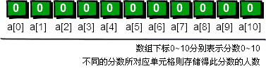
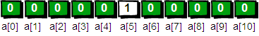
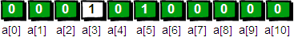
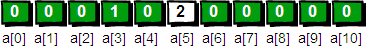
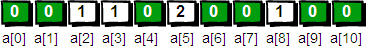

【坐在马桶上看算法】算法1：最快最简单的排序——桶排序
【啊哈！算法】
在我们生活的这个世界中到处都是被排序过的。站队的时候会按照身高排序，考试的名次需要按照分数排序，网上购物的时候会按照价格排序，电子邮箱中的邮件按照时间排序……总之很多东西都需要排序，可以说排序是无处不在。现在我们举个具体的例子来介绍一下排序算法。
首先出场的我们的主人公小哼，上面这个可爱的娃就是啦。期末考试完了老师要将同学们的分数按照从高到低排序。小
哼的班上只有5个同学，这5个同学分别考了5分、3分、5分、2分和8分，哎考的真是惨不忍睹（满分是10分）。接下来将分数进行从大到小排序，排序后是
8 5 5 3
2。你有没有什么好方法编写一段程序，让计算机随机读入5个数然后将这5个数从大到小输出？请先想一想，至少想15分钟再往下看吧(*^__^*) 。
我们这里只需借助一个一维数组就可以解决这个问题。请确定你真的仔细想过再往下看哦。
首先我们需要申请一个大小为11的数组int
a[11]。OK现在你已经有了11个变量，编号从a[0]~a[10]。刚开始的时候，我们将a[0]~a[10]都初始化为0，表示这些分数还都没有
人得过。例如a[0]等于0就表示目前还没有人得过0分，同理a[1]等于0就表示目前还没有人得过1分……a[10]等于0就表示目前还没有人得过10
分。

下面开始处理每一个人的分数，第一个人的分数是5分，我们就将相对应a[5]的值在原来的基础增加1，即将a[5]的值从0改为1，表示5分出现过了一次。

第二个人的分数是3分，我们就把相对应a[3]的值在原来的基础上增加1，即将a[3]的值从0改为1，表示3分出现过了一次。

注意啦！第三个人的分数也是“5分”，所以a[5]的值需要在此基础上再增加1，即将a[5]的值从1改为2。表示5分出现过了两次。

按照刚才的方法处理第四个和第五个人的分数。最终结果就是下面这个图啦。

你发现没有，a[0]~a[10]中的数值其实就是0分到10分每个分数出现的次数。接下来，我们只需要将出现过的分数打印出来就可以了，出现几次就打印几次，具体如下。
a[0]为0，表示“0”没有出现过，不打印。
a[1]为0，表示“1”没有出现过，不打印。
a[2]为1，表示“2”出现过1次，打印2。
a[3]为1，表示“3”出现过1次，打印3。
a[4]为0，表示“4”没有出现过，不打印。
a[5]为2，表示“5”出现过2次，打印5 5。
a[6]为0，表示“6”没有出现过，不打印。
a[7]为0，表示“7”没有出现过，不打印。
a[8]为1，表示“8”出现过1次，打印8。
a[9]为0，表示“9”没有出现过，不打印。
a[10]为0，表示“10”没有出现过，不打印。
最终屏幕输出“2 3 5 5 8”，完整的代码如下。

#include <stdio.h> int main() { int a[11],i,j,t; for(i=0;i<=10;i++) a[i]=0; //初始化为0 for(i=1;i<=5;i++) //循环读入5个数 { scanf("%d",&t); //把每一个数读到变量t中 a[t]++; //进行计数 } for(i=0;i<=10;i++) //依次判断a[0]~a[10] for(j=1;j<=a[i];j++) //出现了几次就打印几次 printf("%d ",i); getchar();getchar(); //这里的getchar();用来暂停程序，以便查看程序输出的内容 //也可以用system("pause");等来代替 return 0; }
输入数据为
5 3 5 2 8
仔细观察的同学会发现，刚才实现的是从小到大排序。但是我们要求是从大到小排序，这该怎么办呢？还是先自己想一想再往下看哦。
其实很简单。只需要将for(i=0;i<=10;i++)改为for(i=10;i>=0;i--)就OK啦，快去试一试吧。
这种排序方法我们暂且叫他“桶排序”。因为其实真正的桶排序要比这个复杂一些，以后再详细讨论，目前此算法已经能够满足我们的需求了。
这个算法就好比有11个桶，编号从0~10。每出现一个数，就将对应编号的桶中的放一个小旗子，最后只要数数每
个桶中有几个小旗子就OK了。例如2号桶中有1个小旗子，表示2出现了一次；3号桶中有1个小旗子，表示3出现了一次；5号桶中有2个小旗子，表示5出现
了两次；8号桶中有1个小旗子，表示8出现了一次。

现在你可以请尝试一下输入n个0~1000之间的整数，将他们从大到小排序。提醒一下如果需要对数据范围在
0~1000之间的整数进行排序，我们需要1001个桶，来表示0~1000之间每一个数出现的次数，这一点一定要注意。另外此处的每一个桶的作用其实就
是“标记”每个数出现的次数，因此我喜欢将之前的数组a换个更贴切的名字book（book这个单词有记录、标记的意思），代码实现如下。
#include <stdio.h> int main() { int book[1001],i,j,t,n; for(i=0;i<=1000;i++) book[i]=0; scanf("%d",&n);//输入一个数n，表示接下来有n个数 for(i=1;i<=n;i++)//循环读入n个数，并进行桶排序 { scanf("%d",&t); //把每一个数读到变量t中 book[t]++; //进行计数，对编号为t的桶放一个小旗子 } for(i=1000;i>=0;i--) //依次判断编号1000~0的桶 for(j=1;j<=book[i];j++) //出现了几次就将桶的编号打印几次 printf("%d ",i); getchar();getchar(); return 0; }
可以输入以下数据进行验证
10 8 100 50 22 15 6 1 1000 999 0
运行结果是
1000 999 100 50 22 15 8 6 1 0
最后来说下时间复杂度的问题。代码中第6行的循环一共循环了m次（m为桶的个数），第9行的代码循环了n次（n为待排序数的个数），第14和15行一共循环了m+n次。所以整个排序算法一共执行了m+n+m+n次。我们用大写字母O来表示时间复杂度，因此该算法的时间复杂度是O(m+n+m+n)即O(2*(m+n))。我们在说时间复杂度时候可以忽略较小的常数，最终桶排序的时间复杂度为O(m+n)。还有一点，在表示时间复杂度的时候，n和m通常用大写字母即O(M+N)。
这是一个非常快的排序算法。桶排序从1956年就开始被使用，该算法的基本思想是由E.J.Issac和R.C.Singleton提出来。之前我有说过，其实这并不是真正的桶排序算法，真正的桶排序算法要比这个更加复杂。但是考虑到此处是算法讲解的第一篇，我想还是越简单易懂越好，真正的桶排序留在以后再聊吧。需要说明一点的是：我们目前学习的简化版桶排序算法其本质上还不能算是一个真正意义上的排序算法。为什么呢？例如遇到下面这个例子就没辙了。
现在分别有5个人的名字和分数：huhu 5分、haha 3分、xixi 5分、hengheng 2分和gaoshou 8分。请按照分数从高到低，输出他们的名字。即应该输出gaoshou、huhu、xixi、haha、hengheng。发现问题了没有？如果使用我们刚才简化版的桶排序算法仅仅是把分数进行了排序。最终输出的也仅仅是分数，但没有对人本身进行排序。也就是说，我们现在并不知道排序后的分数原本对应着哪一个人！这该怎么办呢？不要着急请看下节——冒泡排序。
码字不容易啊，转载请标明出处^_^
【一周一算法】算法1：最快最简单的排序——桶排序
http://bbs.ahalei.com/thread-4399-1-1.html(出处: 啊哈磊_编程从这里起步)